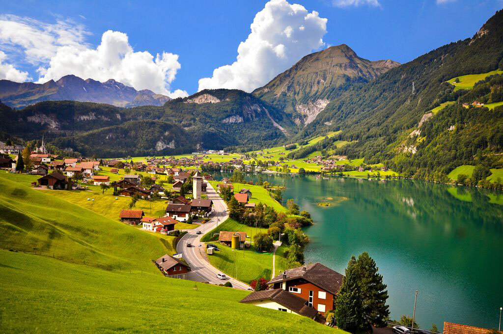
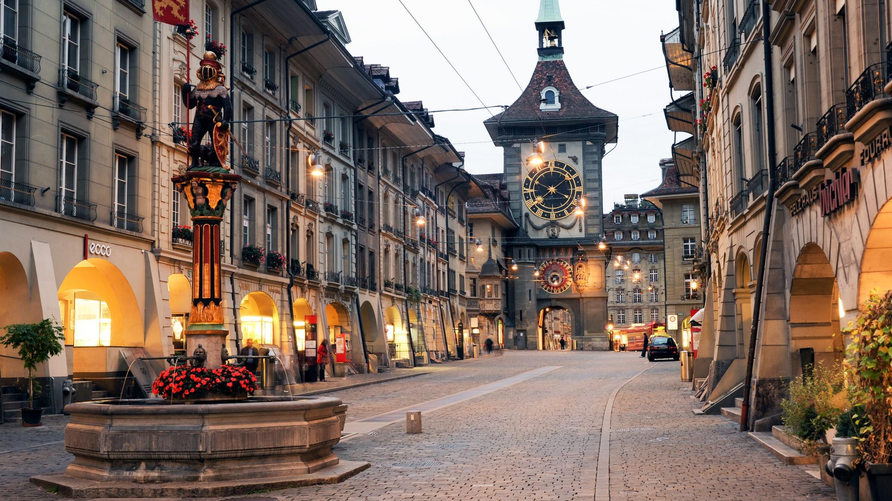
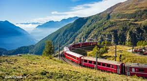
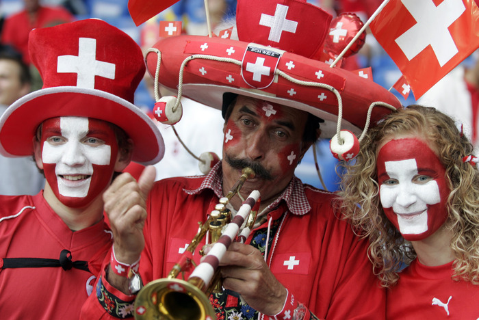

Одна из самых красивых и живописных стран мира — Швейцария - славится тем, что здесь производят самые точные часы, самые вкусные шоколад и сыр; банки надёжны и стабильны, как нигде в мире; в политике соблюдается полный нейтралитет. Природа отличается особой красотой и умиротворенностью. А уровень жизни — высочайший! Поэтому народ в стране спокоен и благодушен.
Швейцария — лучшее место в Европе для избавления от стресса. В этой альпийской стране с чистейшим воздухом, горными озерами, неторопливым ритмом жизни можно обрести истинное душевное равновесие и покой. Здешний воздух – это универсальное средство от усталости, бессонницы и депрессий. А прогулки по живописным окрестностям оставят незабываемые впечатления. Причем страна предлагает разные виды отдыха в зависимости от степени стресса. Тем, у кого стресс на уровне нервного истощения — отдых на водах в Лейкербаде или путешествие на самом медленном поезде «Ледниковый экспресс».
Общие сведения: В любое время года Швейцария - отличное место проведения отпуска, где на малом пространстве сосредоточены уникальные красоты природы и выдающиеся творения человеческих рук. Эта страна говорит на многих языках и вмещает в своих границах несколько культур. Недаром эту страну называют Европой в миниатюре. Швейцария знаменита горнолыжными курортами, высокогорными озерами, банками, швейцарскими часами, то есть всем тем, что ассоциируется с высоким качеством. Безусловно, своими богатствами Швейцария во многом обязана своему главному капиталу - уникальному ландшафту, привлекающему сюда, начиная с XIX века, массу туристов из разных стран мира. Швейцария - одна из самых красивых стран мира, недаром королева Великобритании Елизавета II сказала во время визита в Берн: "Швейцария - это рай".
Площадь и население: Площадь - 41,3 тыс. кв. км. В 1997 население Швейцарии составляло 7097 тыс. человек и было сосредоточено главным образом в равнинных районах. Наибольшей плотностью населения отличаются крупные промышленные центры – Цюрих, Базель и Женева. Наиболее крупные города страны (население в тыс. в 1997): Цюрих (339), Женева (173), Базель (171), Берн (124), Лозанна (114), Винтертур (87), Санкт-Галлен (71) и Люцерн (58).
Столица :Город Берн (Лзанна - место пребывание федеральных сдебных органов).
 Религия : Верующие - католики, протестанты. Швейцария - республика, федерация в составе 23 кантонов (3 из них разделены на полукантоны). Столица - Берн (Лозанна - местопребывание федеральных судебных органов). Глава государства - президент. Законодательный орган - двухпалатное Федеральное собрание (Национальный совет и Совет кантонов). ЯзыкЯзык В конституции Швейцарии государственными языками названы немецкий, французский, итальянский и ретороманский. Практически каждый житель этой страны говорит на двух языках. В наше время широкое распространение получил английский. На ретороманском языке, производном от латинского и также имеющем статус национального, говорит примерно 1% населения страны. Наиболее распространен немецкий язык: его местным диалектом – алеманнским (швицердюч) – пользуются 73% швейцарских граждан и 64% населения страны. Французский язык употребляют ок. 19% населения, преимущественно в кантонах Женева, Во, Невшатель, Фрибур и Вале. На итальянском языке говорит ок. 4% швейцарских граждан (главным образом в кантоне Тичино), а с учетом иностранных рабочих – 8% населения страны. Ретороманский язык распространен только в горном кантоне Граубюнден.
Культура: Народная культура Швейцарии включает пение йодлем , игру на альпийском рожке, и швейцарскую борьбу. В Швейцарии живут четыре народа: германошвейцарцы, франкошвейцарцы, италошвейцарцы и ретороманцы. Они различаются этническим самосознанием, языком и культурным своеобразием. Германошвейцарцы населяют в основном северные, северо-восточные и центральные кантоны, говорят на швейцарском варианте немецкого языка. Франкошвейцарцы занимают преимущественно западные и юго-западные районы, говорят на южнофранцузских (провансальских) диалектах. Италошвейцарцы сосредоточены в основном в южных районах, говорят на итальянском языке. Ретороманцы в большинстве своем проживают в кантоне Граубюнден, говорят на ретороманском языке. Несмотря на неоднородный состав жителей, в стране нет острых этнических противоречий. По швейцарской конституции, все четыре народа равноправны, а их языки признаны национальными. Родной язык жителей каждой этнической области является в ее пределах основным разговорным, а также языком прессы, школьного образования и т. д. Пестрота этнического состава , своеобразие истории отражаются в материальной и духовной культуре. Тип и форму сельских поселений во многом определяет рельеф местности. Например, в районе Шве йцарского плоскогорья преобладают большие деревни, а в горной местности — хутора из 1 — 5 дворов. Для большей части страны характерны дома, объединяющие жилые и хозяйственные постройки под одной крышей. Их планировка и конструктивные особенности по областям варьируются.
Транспорт: В Швейцарии имеется развитая система городского транспорта, включающая поезда, автобусы, теплоходы и фуникулеры. Внутренние перелеты не представляют большого интереса для туристов, так как наземный транспорт великолепно развит. Швейцарская система железных дорог имеет протяженность 5000 км. Желтые почтовые автобусы заменяют поезда, автобусные остановки находятся рядом с железнодорожными станциями. В большинстве крупных городов имеются агентства по аренде автомобилей. Дороги находятся в хорошем состоянии, имеют хорошие дорожные знаки и указатели и обычно не слишком забиты транспортом, хотя, возможно, вам будет трудно сосредоточиться при таком замечательным пейзаже вокруг. Почти на каждом железнодорожном вокзале можно взять напрокат велосипед и вернуть его тоже можно на любой станции, где имеется офис по аренде велосипедов. На всех крупных озерах ходят теплоходы, для большинства теплоходных маршрутов действительны железнодорожные проездные.
Праздники: В целом все праздники в Швейцарии делятся на национальные, то есть те, которые празднуются всей конфедерацией, и региональные, присущие конкретным историческим местностям. Год начинается с празднования Нового года, первого января. На следующий день четырнадцать кантонов празднуют день святого Бертольда или святого Базилио, как его величают в италоговорящих регионах. Через несколько дней празднуется Крещение (6 января), но масштабы этого праздника совсем небольшие, официально он признан только в четырех кантонах. Девятнадцатого марта празднуется день святого Иосифа или Джузеппе, которые отмечают традиционно в Тироле, Ури, Люцерне и некоторых других местах. В марте-апреле, как и во всем христианском мире празднуется Пасха и страстная пятница (ее не празднуют только в Тироле и Швице). Кроме Пасхи и Нового года вся конфедерация празднует Благовещение (тридцать девятый день после Пасхи), Троицу (сорок девятый день после Пасхи), национальный день Швейцарии (первое августа) и Рождество (25 декабря). Третье воскресенье сентября – день федерального объединения Швейцарии не празднуют только в Генуе, а Духов день, понедельник после Троицы, не является праздничным днем только в Вальясе. Католические регионы празднуют также Успение Богоматери (15 августа), День всех святых (1 ноября) и праздник Непорочного Зачатия Пресвятой Девы Марии (8 декабря). Интересно, что день Святого Стефана (26 декабря) отмечают в Нефшателе только, если он попадает на понедельник.
Кухня : Несмотря на то, что в сознании многих людей эта страна прочно ассоциируется с сыром и шоколадом, эти продукты не главные в национальной кухне Швейцарии . Швейцария славится не только национальным и культурным разнообразием, но и богатым выбором блюд французской, немецкой и итальянской кухни. А вот блюда из расплавленного сыра - фондю и раклет - типично швейцарские. Фондю впервые начали готовить в Невшателе, используя местное вино, поэтому чаще всего это блюдо называют невшательским фондю. Тертый сыр (поровну - Эмменталь и Грюер) варят в белом вине, добавляют кукурузный или картофельный крахмал и вишневую водку кирш. В эту кипящую смесь макают кусочки хлеба, насаженные на вилку с длинной деревянной ручкой. Раклет - расплавленный сыр, который подают на хорошо прогретой тарелке. Также стоит попробовать знаменитую рубленую телятину по-цюрихски с традиционным швейцарским картофелем "Rosti". В районе Женевского озера вам предложат традиционное филе окуня, обжаренное в масле. Филе подают с дольками лимона, а на гарнир - вареный картофель или обжаренный миндаль. Очень необычен и вкусен густой овощной суп "Минестроне", в состав которого входят помидоры, фасоль, рис, картофель, морковь, горох, цветная капуста, лук-порей и тертый сыр "Сбринц" - швейцарский аналог пармезана. Суп "Минестроне" - традиционное блюдо в Тичино. Еще одно известное первое блюдо - Граубюнденский ячменный суп, приготовленный из копченой говядины, капусты, и, конечно же, ячменя. Макароны по-альпийски - это несколько непривычное сочетание макарон и картошки, заправленное сметаной и тертым сыром, а сверху посыпанное хрустящим жареным луком. На десерт попробуйте вишневый торт "Цугер Киршторт". Он сделан из слоеного теста и нежного сливочного крема, пропитан вишневым ликером и посыпан орехами. Швейцарские вина , удивительные в своем многообразии, предлагают богатую палитру вкуса и свежесть ароматов
.jpg)
.jpg)
Смотреть видео тут